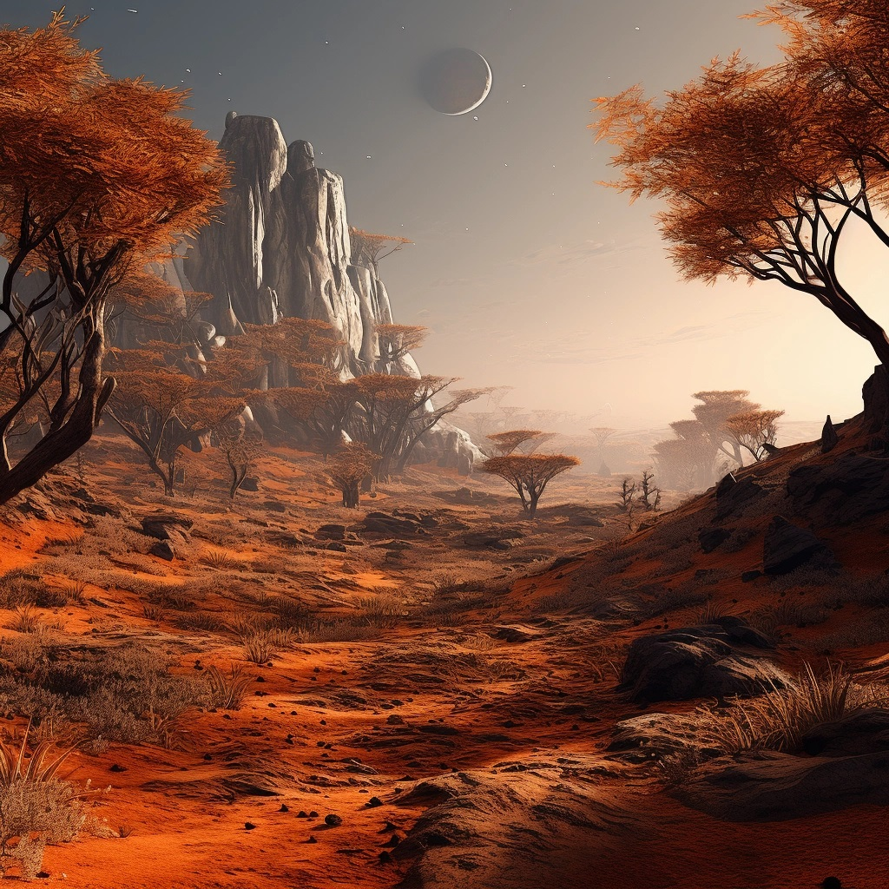
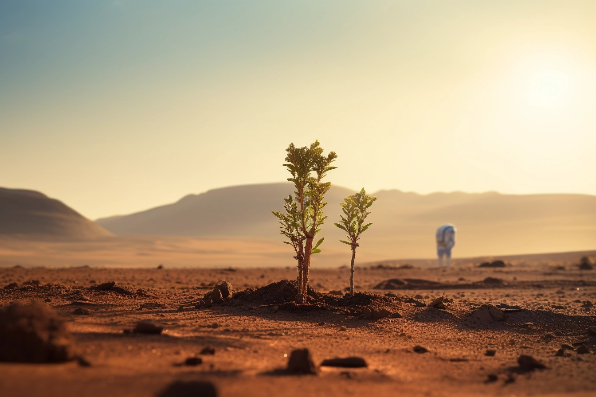
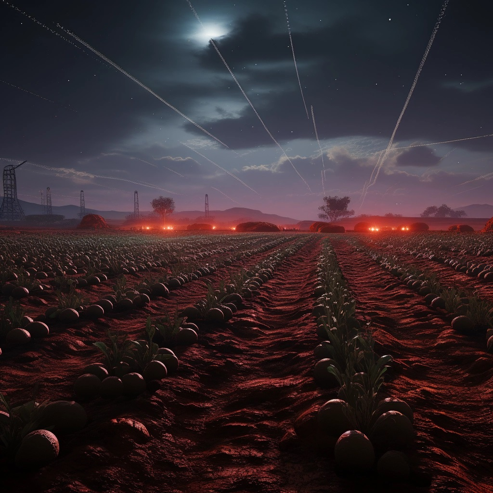

Marsin energia on Marsin siirtokunnan välttämätön resurssi. Ilman energiaa ei ole valoa, lämpöä, vettä, kasvihuonetta, maanviljelyä, viestintää tai liikkumista. Siksi Marsin siirtokunta on hyödyntänyt erilaisia energian muotoja ja teknologioita energian tuottamiseksi, varastoimiseksi ja jakamiseksi.

Marsin energialla on kolme pääasiallista muotoa: aurinko, ydinvoima ja tuuli. Jokaisella muodolla on omat etunsa ja haasteensa.
Aurinko on Marsin energian yleisin ja tärkein muoto. Se on uusiutuva, puhdas ja ilmainen. Siksi Marsin siirtokunta on asentanut suuren määrän aurinkopaneeleja ja aurinkokennoja, jotka muuntavat auringon säteilyn sähköksi ja lämmöksi. Aurinkoenergia on kuitenkin epävakaa ja riippuvainen vuorokaudenajasta ja vuodenajasta. Siksi Marsin siirtokunta on kehittänyt erilaisia akkuja ja lämpöakkumulaattoreita, jotka varastoivat ylimääräisen energian myöhempää käyttöä varten.
Ydinvoima on Marsin energian toiseksi yleisin ja tärkein muoto. Se on tehokas, luotettava ja pitkäikäinen. Siksi Marsin siirtokunta on rakentanut useita ydinreaktoreita ja radioisotooppigeneraattoreita, jotka tuottavat energiaa ydinreaktioista tai radioaktiivisesta hajoamisesta. Ydinenergia on kuitenkin kallista ja vaarallista. Siksi Marsin siirtokunta on noudattanut tiukkoja turvallisuus- ja ympäristösääntöjä sekä standardeja, jotka estävät ydinonnettomuuksia ja ydinjätteen leviämistä.
Tuuli on Marsin energian kolmanneksi yleisin ja tärkein muoto. Se on uusiutuva, puhdas ja halpa. Siksi Marsin siirtokunta on pystyttänyt lukuisia tuuliturbiineja ja tuulimyllyjä jotka muuntavat tuulen liike-energian sähköksi ja mekaaniseksi työksi. Tuulienergia on kuitenkin heikko ja vaihteleva. Siksi Marsin siirtokunta on yhdistänyt tuulienergian muihin energian muotoihin, kuten aurinko- ja ydinenergiaan, tasapainottamaan energian tarjontaa ja kysyntää.

